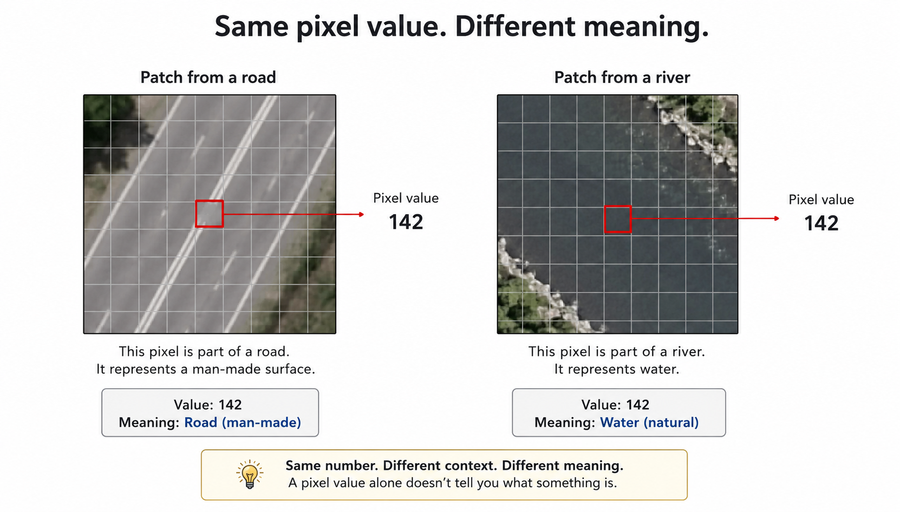
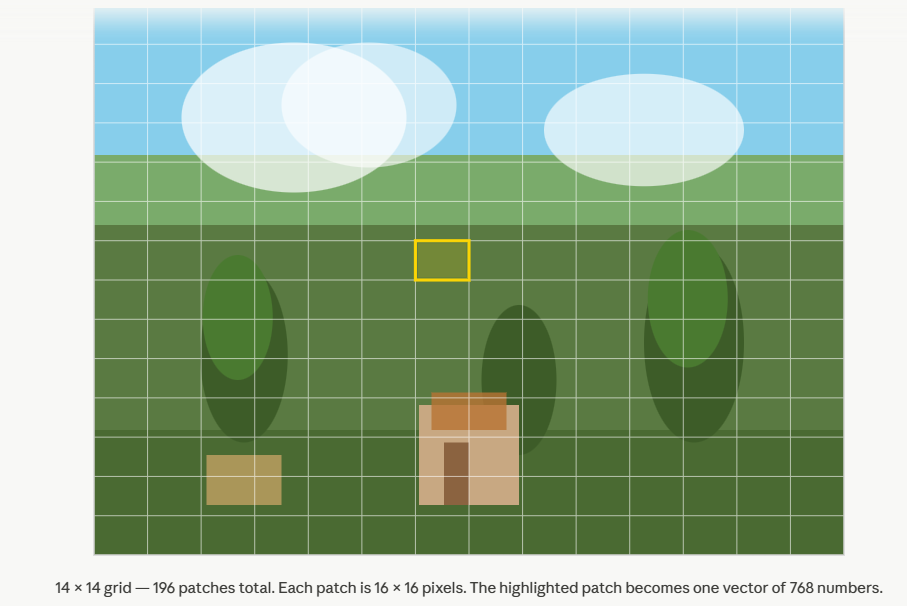
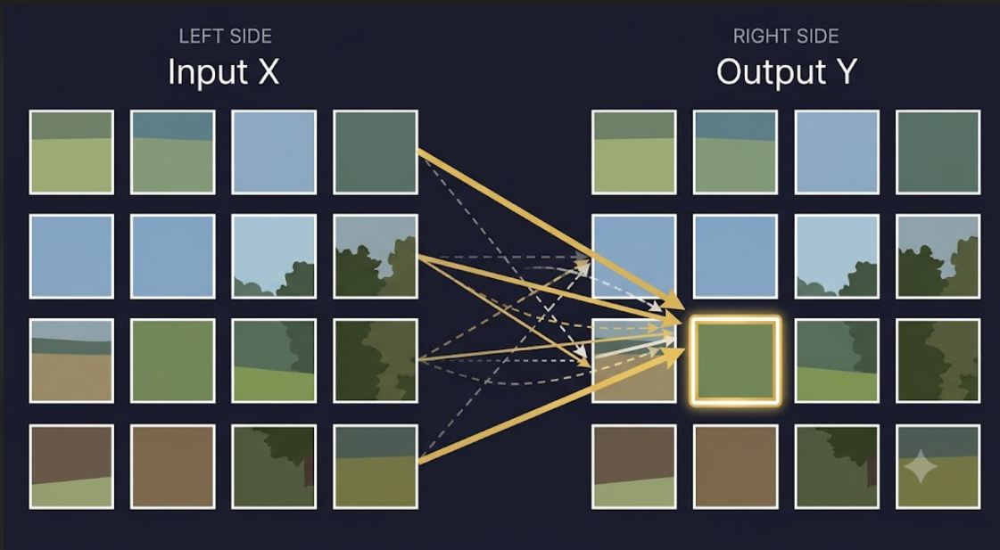
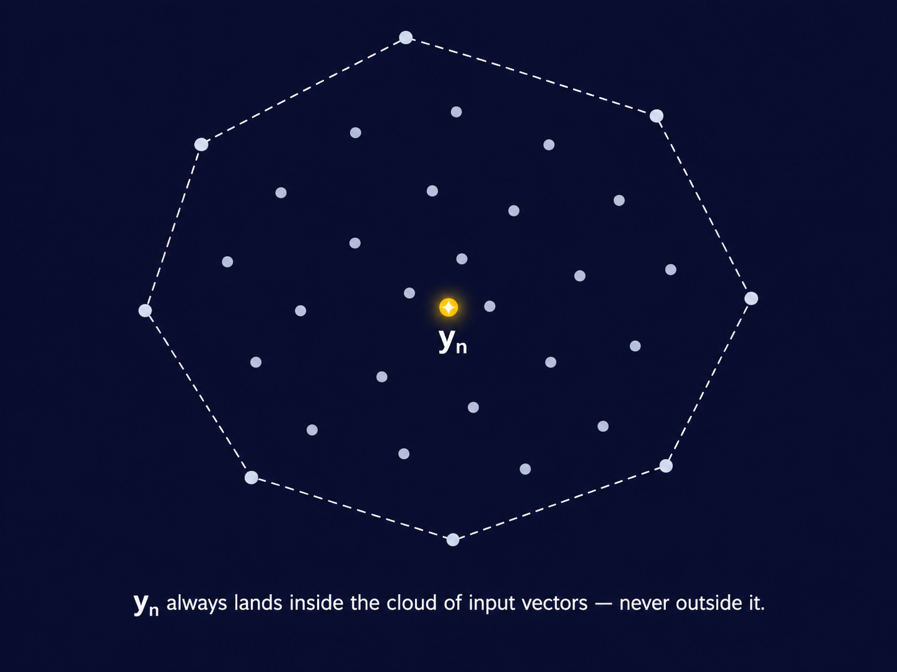
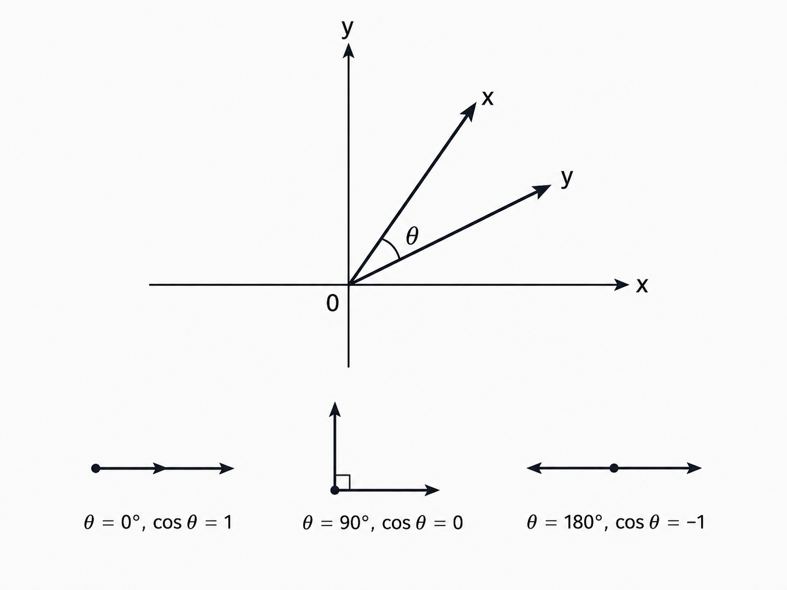
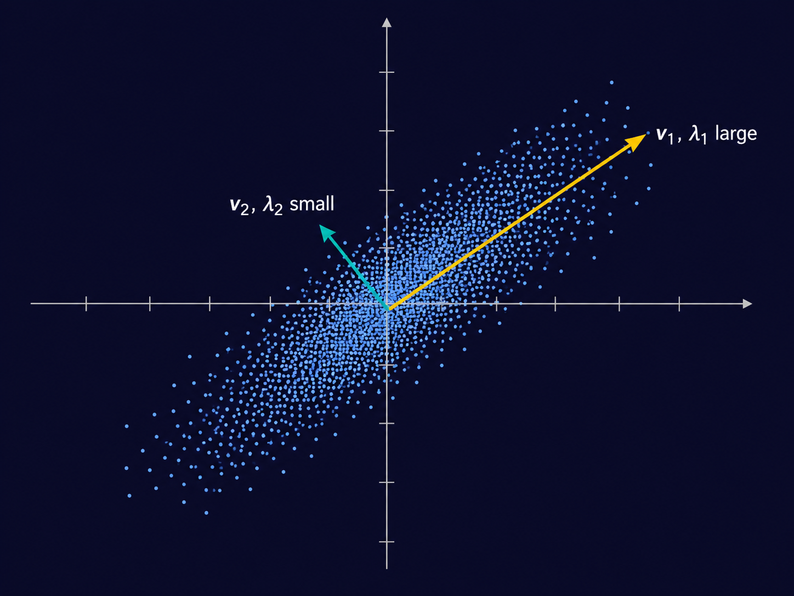
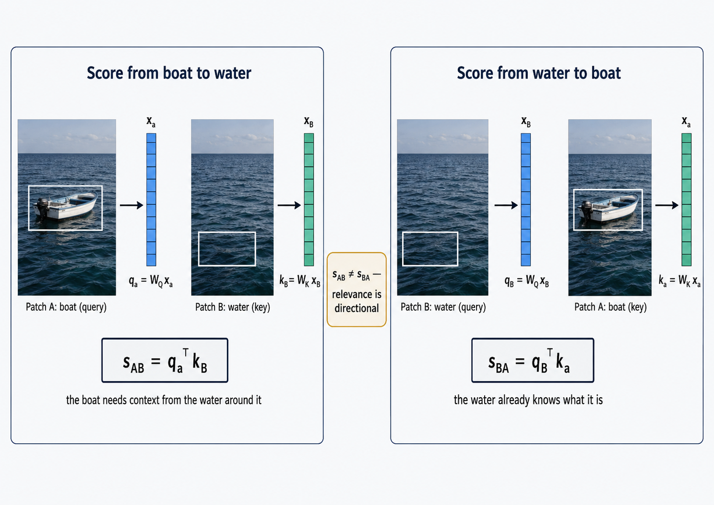
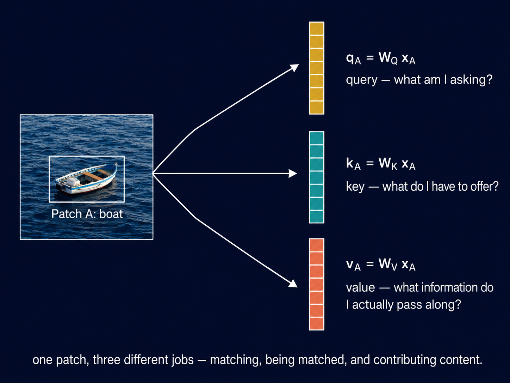

Self-Attention From First Principles
A geometric route from similarity to self-attention
1 What Does a Pixel Mean Without Its Neighbors?
Any digital image is just a matrix of numbers. Consider a satellite image of a region. Pick any pixel- say, position \((100, 100)\). Its value is \(142\). What does it mean? Is it a road? A river? A rooftop?
You cannot tell from a single number. The pixel at \((100, 100)\) only means something in relation to its neighbors — \((99, 100)\), \((101, 100)\), \((100, 99)\). The number 142 is information, not meaning. The relationship between neighboring pixels gives meaning.
This is not just a quirk of satellite imagery. It is true for any kind of image. A single pixel of skin tone near your cheek tells you nothing on its own. What tells you something is the neighborhood the eye above it, the jaw below it and the ear to its side. The pixel derives its meaning from what surrounds it.
Now zoom out. This is not even specific to images. A word in a sentence works the same way. “Bank” means something completely different depending on whether its neighbors are “river” and “fish” or “loan” and “interest rate.” But we will not go there — this post stays in vision, and images are already rich enough to make the point.

So here is the question this post is really asking:
How do we build a representation of a patch of an image that is informed by all the other patches?
Not a fixed representation. But something that is context-dependent- one that changes based on the neighborhood, the way a pixel’s meaning changes based on what surrounds it.
This is what attention does. And it turns out the path to it runs through a surprisingly classical idea — the notion of similarity between vectors, and specifically, what it means to measure similarity well.
But before we get to the math, let us set the scene properly.
2 Setting the Scene
Suppose we have an image. We divide it into a grid of non-overlapping patches — say, \(16 \times 16\) pixel blocks. Each patch is flattened into a vector. For a colour image with 3 channels, a \(16 \times 16\) patch gives a vector of \(16 \times 16 \times 3 = 768\) numbers.

We now have a set of \(N\) vectors:
\[\{\mathbf{x}_1, \mathbf{x}_2, \ldots, \mathbf{x}_N\}, \quad \mathbf{x}_i \in \mathbb{R}^D\]
Think of each \(\mathbf{x}_i\) as one patch. \(N\) is the number of patches. \(D\) is the dimension of each patch vector — \(768\) in the example above.
We can stack these into a matrix:
\[X = \begin{bmatrix} — & \mathbf{x}_1^T & — \\ — & \mathbf{x}_2^T & — \\ & \vdots & \\ — & \mathbf{x}_N^T & — \end{bmatrix} \in \mathbb{R}^{N \times D}\]
Each row is one patch. \(X\) is our data matrix — \(N\) patches, each with \(D\) features.
A note on notation. Vectors are always column vectors. \(\mathbf{x}_i \in \mathbb{R}^D\) means a column vector with \(D\) entries — a \(D \times 1\) matrix. When we write \(\mathbf{x}_i^T\), we are transposing it into a row vector — a \(1 \times D\) matrix. This is why the data matrix \(X\) is built by stacking transposes: each row of \(X\) is one patch vector laid on its side, giving \(N\) rows and \(D\) columns. Throughout this post, matrix-vector multiplication follows the standard convention — if \(A \in \mathbb{R}^{m \times n}\) and \(\mathbf{x} \in \mathbb{R}^n\), then \(A\mathbf{x} \in \mathbb{R}^m\). Dimensions will be tracked at every step.
Now, the raw patch vectors \(\mathbf{x}_i\) are just pixel values — low-level information. They have no awareness of the rest of the image. Patch 47 does not know what patch 48 looks like, or patch 12, or patch 196.
What we want is a new set of vectors:
\[\{\mathbf{y}_1, \mathbf{y}_2, \ldots, \mathbf{y}_N\}, \quad \mathbf{y}_i \in \mathbb{R}^D\]
where \(\mathbf{y}_n\) is a richer version of \(\mathbf{x}_n\) — one that has looked around at the other patches and incorporated relevant information from them. The output matrix:
\[Y = \begin{bmatrix} — & \mathbf{y}_1^T & — \\ — & \mathbf{y}_2^T & — \\ & \vdots & \\ — & \mathbf{y}_N^T & — \end{bmatrix} \in \mathbb{R}^{N \times D}\]
has the same shape as \(X\). Same number of patches, same dimension. But the representations are no longer context-free — each \(\mathbf{y}_n\) has been informed by the whole image.

This transformation — from \(X\) to \(Y\), from isolated patches to context-aware representations — is what self-attention does. It is not the whole story of a transformer layer; a full layer includes more than this, which we are not building here. This post is about one piece only: how do we compute \(Y\) from \(X\) in the first place?
The question is how. And the answer starts with a deceptively simple idea: weighted averaging. Concretely, we want
\[\mathbf{y}_n = \sum_{m=1}^N a_{nm}\, \mathbf{x}_m\]
for some set of weights \(a_{nm}\) — one weight for every pair of patches \((n, m)\), telling us how much patch \(m\) contributes to the new representation of patch \(n\). Not any set of weights, though. We want \(\mathbf{y}_n\) to be a genuine average of the patches, not an arbitrary combination — so the weights must satisfy
\[a_{nm} \geq 0 \quad \text{for all } m, \qquad \sum_{m=1}^N a_{nm} = 1\]
Every weight is non-negative, and for each fixed \(n\), the weights across all \(m\) sum to exactly \(1\). This is what makes the sum a convex combination of \(\mathbf{x}_1, \ldots, \mathbf{x}_N\), rather than just any linear combination — \(\mathbf{y}_n\) is guaranteed to sit somewhere inside the “cloud” of input vectors, not fly off arbitrarily far from all of them simply because some weight happened to be enormous or negative.

In the next section, we ask: what should those weights look like? And that question leads us directly to the mathematics of similarity.
3 What Should the Weights Look Like?
We ended the last section with a question: how do we choose the weights \(a_{nm}\) that determine how much patch \(m\) contributes to the new representation of patch \(n\)?
Before answering that, we need a more basic ingredient. The weight \(a_{nm}\) should depend on how similar patch \(n\) and patch \(m\) are. Similar patches should influence each other strongly. Dissimilar patches should barely influence each other at all. So really, the question is: how do we measure similarity between two vectors?
3.1 The Naive Answer: Euclidean Distance
The most obvious measure of similarity between two vectors \(\mathbf{x}_n, \mathbf{x}_m \in \mathbb{R}^D\) is Euclidean distance:
\[d(\mathbf{x}_n, \mathbf{x}_m) = \|\mathbf{x}_n - \mathbf{x}_m\| = \sqrt{(\mathbf{x}_n - \mathbf{x}_m)^T (\mathbf{x}_n - \mathbf{x}_m)}\]
Small distance means similar. Large distance means dissimilar. Simple enough.
But Euclidean distance makes a strong assumption that every dimension of \(\mathbf{x}\) matters equally, and that they are uncorrelated. Let’s address these issues.
The first assumption is that every dimension matters equally. Step away from pixels for a second and consider this example. Suppose you are comparing two people using two numbers: their height and shoe size. Assume heights and shoe sizes range from 150 to 185 cm and 6 to 12 respectively. A difference of 5 units in height and a difference of 5 units in shoe size DO NOT mean the same thing. Euclidean distance does not know and care about it. A similar thing happens with two image patches. A 30 unit pixel shift in sand or asphalt is unusual and may mean something whereas the same shift in sky could mean nothing.
The second assumption is that the dimensions are uncorrelated- that is each carries its own independent piece of information. Note that I’m using the words independent and uncorrelated very loosely, not rigorously. If one pixel in a patch is bright, the other pixel is almost always bright. Once you know one, you already know most of the others. But Euclidean distance treats them as two separate, independent entities.
3.2 The Dot Product, Reconsidered
Before we fix Euclidean distance, it helps to look at a different — and in some ways more natural — way of comparing two vectors: the dot product. Many of you will have seen this before, in prior coursework. There is nothing wrong with revisiting it — the dot product will matter throughout this series, and it will keep appearing, in new disguises, all the way to self-attention.
Most of what follows in this section will be review. I am going to be a little pedantic about it anyway, because the discussions coming up — Mahalanobis distance, and eventually queries and keys — lean on this machinery more heavily than it might first appear. It is worth having it nailed down precisely now, rather than gesturing at it later. The dot product between two vectors \(\mathbf{x}_n, \mathbf{x}_m \in \mathbb{R}^D\) is defined by:
\[\mathbf{x}_n^T \mathbf{x}_m = \langle \mathbf{x}_n, \mathbf{x}_m \rangle = \sum_{i=1}^{D} x_{ni} \, x_{mi}\]
Both notations mean the same thing here. \(\mathbf{x}_n^T \mathbf{x}_m\) is the matrix-multiplication way of writing it — a \(1 \times D\) row vector times a \(D \times 1\) column vector, giving a \(1 \times 1\) scalar- a real number. \(\langle \mathbf{x}_n, \mathbf{x}_m \rangle\) is the inner-product way of writing it — it makes no reference to rows or columns at all, just two vectors and an operation between them. The transpose notation is useful for computation. The angle-bracket notation is the one preferred in mathematics, and the one we will lean on when the geometry matters more than the arithmetic.
Norm. The inner product of a vector with itself gives its squared length:
\[\|\mathbf{x}\|^2 = \langle \mathbf{x}, \mathbf{x} \rangle\]
Distance. Distance is the norm of a difference:
\[d(\mathbf{x}_n, \mathbf{x}_m) = \|\mathbf{x}_n - \mathbf{x}_m\| = \sqrt{\langle \mathbf{x}_n - \mathbf{x}_m, \, \mathbf{x}_n - \mathbf{x}_m \rangle}\]
Inner product, norm, and distance are not three separate ideas. They are one idea, viewed from different angles — no pun intended, yet.
Cauchy-Schwarz. For any two vectors,
\[|\langle \mathbf{x}_n, \mathbf{x}_m \rangle| \leq \|\mathbf{x}_n\| \, \|\mathbf{x}_m\|\]
with equality exactly when \(\mathbf{x}_n\) and \(\mathbf{x}_m\) are parallel — one is a scalar multiple of the other. This inequality is doing more work than it looks like. It guarantees that the ratio
\[\frac{\langle \mathbf{x}_n, \mathbf{x}_m \rangle}{\|\mathbf{x}_n\| \, \|\mathbf{x}_m\|}\]
always lies in \([-1, 1]\) — never larger, never smaller. That is exactly the range of \(\cos\theta\). Without Cauchy-Schwarz, there would be no guarantee that this ratio behaves like a cosine at all. With it, we are licensed to define an angle.
Angle. Define \(\theta\), the angle between \(\mathbf{x}_n\) and \(\mathbf{x}_m\), by
\[\cos\theta = \frac{\langle \mathbf{x}_n, \mathbf{x}_m \rangle} {\|\mathbf{x}_n\| \, \|\mathbf{x}_m\|}, \qquad \text{equivalently} \qquad \langle \mathbf{x}_n, \mathbf{x}_m \rangle = \|\mathbf{x}_n\| \, \|\mathbf{x}_m\| \cos\theta\]
This is the familiar decomposition: the inner product is the product of the two lengths, scaled by how aligned their directions are.

Orthogonality, now, is just the special case \(\theta = 90°\), where \(\cos\theta = 0\):
\[\langle \mathbf{x}_n, \mathbf{x}_m \rangle = 0\]
Geometrically, the two vectors meet at a right angle — the two edges of an “L.” Neither has any component pointing along the other.
This is also the Pythagorean theorem, stated in inner-product language. Expand \(\|\mathbf{x}_n - \mathbf{x}_m\|^2\) using the inner product:
\[\|\mathbf{x}_n - \mathbf{x}_m\|^2 = \|\mathbf{x}_n\|^2 - 2\langle \mathbf{x}_n, \mathbf{x}_m \rangle + \|\mathbf{x}_m\|^2\]
When \(\mathbf{x}_n\) and \(\mathbf{x}_m\) are orthogonal, the cross term vanishes, leaving \(\|\mathbf{x}_n - \mathbf{x}_m\|^2 = \|\mathbf{x}_n\|^2 + \|\mathbf{x}_m\|^2\) — the familiar \(a^2 + b^2 = c^2\), for vectors instead of triangle sides.
Similarity. We now have everything we need to justify a claim made earlier without proof: that the inner product is a similarity measure.
Look again at the expansion above. Hold \(\|\mathbf{x}_n\|\) and \(\|\mathbf{x}_m\|\) fixed. The only term left to move is \(-2\langle \mathbf{x}_n, \mathbf{x}_m \rangle\). As the inner product grows, this term becomes more negative, and the squared distance shrinks. As the inner product shrinks toward zero — orthogonality — distance grows toward its maximum for vectors of those fixed lengths. As the inner product goes negative, distance grows further still.
This is not a coincidence we are choosing to interpret favourably. For vectors of fixed length, the inner product and the squared distance between them are exact mirror images of one another. Large inner product is not merely associated with small distance — it is, up to the fixed-length terms, the same statement. That is why the dot product is entitled to be called a similarity measure and not just another real number.
A brief step back. Everything above used one specific inner product — the dot product on \(\mathbb{R}^D\). But “inner product” is a more general notion than “dot product.” Formally, an inner product on a vector space is any map \(\langle \cdot, \cdot \rangle\) taking two vectors to a scalar, satisfying three properties: linearity in each argument, symmetry (\(\langle u, v \rangle = \langle v, u \rangle\)), and positive-definiteness (\(\langle u, u \rangle \geq 0\), with equality only when \(u = 0\)). Any map satisfying these three properties automatically inherits everything we just built — a notion of norm (\(\|u\|^2 = \langle u, u \rangle\)), a notion of distance, and a Cauchy-Schwarz inequality, exactly as derived above. The dot product is the most familiar example. It is not the only one.
This matters, because the next example is not a vector of pixel values at all.
A second example. If \(X\) and \(Y\) are random variables, define
\[\langle X, Y \rangle := \mathbb{E}[XY]\]
You can check this satisfies all three properties above — it is linear in each argument, symmetric, and \(\mathbb{E}[X^2] \geq 0\), with equality only when \(X\) is the zero random variable. So this is a legitimate inner product, just not one on arrows in space — it lives on the space of random variables.
The norm it induces is the second moment, \(\|X\|^2 = \mathbb{E}[X^2]\). For mean-zero \(X\) and \(Y\), the inner product is exactly the covariance:
\[\text{Cov}(X, Y) = \mathbb{E}[XY] = \langle X, Y \rangle\]
and Cauchy-Schwarz, applied here instead of in \(\mathbb{R}^D\), gives
\[\rho(X, Y) = \frac{\langle X, Y \rangle}{\|X\| \, \|Y\|} = \frac{\text{Cov}(X, Y)}{\sqrt{\text{Var}(X)} \sqrt{\text{Var}(Y)}} \in [-1, 1]\]
Correlation is a cosine. Not the cosine of an angle between arrows — the cosine of an angle between two random variables, living in the inner product space defined by expectation. Same inequality, same \(\cos\theta\), different space.
Cosine similarity. We have now seen \(\cos\theta\) appear twice — once for vectors in \(\mathbb{R}^D\), once for random variables under expectation. It is worth naming this quantity properly, because it is, by far, the most common similarity measure you will encounter in machine learning.
\[\text{cossim}(\mathbf{x}_n, \mathbf{x}_m) = \cos\theta = \frac{\langle \mathbf{x}_n, \mathbf{x}_m \rangle}{\|\mathbf{x}_n\| \, \|\mathbf{x}_m\|}\]
This is simply the inner product, normalized by the two lengths. Cosine similarity asks only one question: how aligned are the directions of \(\mathbf{x}_n\) and \(\mathbf{x}_m\), regardless of length? Parallel vectors give \(1\). Orthogonal vectors give \(0\). Opposite vectors give \(-1\) — and Cauchy-Schwarz is exactly what guarantees the number can never escape \([-1, 1]\).
Application. In information retrieval, recommender systems, and GenAI applications like RAG, cosine similarity is perhaps the most common way to find the vectors most similar to a query. An embedding’s direction tends to carry the meaning, while its magnitude is often just an artifact of training. This is exactly the situation cosine similarity is built for: it discards scale entirely and asks only whether the directions agree. If you have ever called a vector database’s similarity_search and wondered what was actually happening under the hood — this is it.
3.3 A Short, Necessary Detour Through Linear Algebra
We already built inner products, norms, and distance from scratch once in this post. Now we need three more pieces of machinery, in the same spirit, before we can write down Mahalanobis distance.
Before we can write it down properly, we need three things: the spectral theorem, what an eigendecomposition actually means geometrically, and what it means to take the square root of a matrix. I am not going to shortcut this. The whole point of Mahalanobis distance — and the reason it connects to attention later — lives inside this machinery, not around it. Skipping it would mean asking you to trust a formula instead of understanding it, and that is not how this book works.
If you already know this material cold, feel free to skim — the payoff comes in the next section, when we use all of this to derive Mahalanobis distance properly. But here is a TL;DR.
Random vectors. A random vector \(\mathbf{X} = (X_1, \ldots, X_D)^T\) is just a vector whose entries are random variables. Its mean is the vector of individual means, \(\boldsymbol{\mu} = \mathbb{E}[\mathbf{X}] = (\mathbb{E}[X_1], \ldots, \mathbb{E}[X_D])^T\), and its covariance is the matrix \(\Sigma \in \mathbb{R}^{D \times D}\) given by
\[\Sigma_{ij} = \text{Cov}(X_i, X_j) = \mathbb{E}\big[(X_i - \mathbb{E}X_i)(X_j - \mathbb{E}X_j)\big]\]
Think of \(\mathbf{X}\) as a patch vector, where each \(X_i\) is one pixel value, treated as random because it varies across the many images we might draw a patch from.
The spectral theorem. Every real symmetric matrix \(\Sigma \in \mathbb{R}^{D \times D}\) can be written as
\[\Sigma = Q \Lambda Q^T\]
where \(Q \in \mathbb{R}^{D \times D}\) is orthogonal (\(Q^TQ = QQ^T = I\)) and \(\Lambda\) is diagonal, with real entries \(\lambda_1 \geq \lambda_2 \geq \cdots \geq \lambda_D\). This holds for every real symmetric matrix, no exceptions. A covariance matrix is always symmetric — \(\text{Cov}(X_i, X_j) = \text{Cov}(X_j, X_i)\) — so this applies to every covariance matrix we will ever write down.
What this means geometrically. The columns of \(Q\) are the eigenvectors of \(\Sigma\) — call them \(\mathbf{v}_1, \ldots, \mathbf{v}_D\), each a unit vector. They form an orthonormal basis: a full set of mutually perpendicular directions. These are the principal axes of the data.
A word of caution before going further: the eigenvalues \(\lambda_i\) are not the variances of the original coordinates \(X_1, \ldots, X_D\). That would be a different, false claim. \(\text{Var}(X_i) = \Sigma_{ii}\), the \(i\)-th diagonal entry of \(\Sigma\) — true by definition, no eigendecomposition required. What the eigenvalues actually capture is the variance along the eigenbasis directions, not along the original coordinate axes. Here is the precise statement.
Since \(\{\mathbf{v}_1, \ldots, \mathbf{v}_D\}\) is an orthonormal basis, we can write \(\mathbf{X}\) itself as a linear combination of eigenvectors:
\[\mathbf{X} = C_1 \mathbf{v}_1 + C_2 \mathbf{v}_2 + \cdots + C_D \mathbf{v}_D, \qquad C_j = \langle \mathbf{X}, \mathbf{v}_j \rangle = \mathbf{v}_j^T \mathbf{X}\]
Each \(C_j\) is a scalar random variable — a specific linear combination of \(X_1, \ldots, X_D\), telling you how much of \(\mathbf{X}\) lies along direction \(\mathbf{v}_j\). It has a variance, and we can compute it directly:
\[\text{Var}(C_j) = \text{Var}(\mathbf{v}_j^T\mathbf{X}) = \mathbb{E}\big[(\mathbf{v}_j^T\mathbf{X} - \mathbb{E}[\mathbf{v}_j^T\mathbf{X}])^2\big] = \mathbb{E}\big[(\mathbf{v}_j^T(\mathbf{X} - \boldsymbol{\mu}))^2\big]\]
using linearity of expectation to pull \(\mathbf{v}_j^T\) through the mean. Write the square as an inner product with itself:
\[\mathbb{E}\big[(\mathbf{v}_j^T(\mathbf{X} - \boldsymbol{\mu}))^2\big] = \mathbb{E}\big[\mathbf{v}_j^T(\mathbf{X} - \boldsymbol{\mu})(\mathbf{X} - \boldsymbol{\mu})^T\mathbf{v}_j\big] = \mathbf{v}_j^T \, \mathbb{E}\big[(\mathbf{X} - \boldsymbol{\mu})(\mathbf{X} - \boldsymbol{\mu})^T\big] \, \mathbf{v}_j\]
pulling \(\mathbf{v}_j\) outside the expectation, since it is a constant vector, not a random one. The matrix sitting inside the expectation is exactly the covariance matrix — this is just \(\Sigma_{ij} = \text{Cov}(X_i, X_j) = \mathbb{E}[(X_i - \mu_i)(X_j - \mu_j)]\), written all at once instead of one entry at a time. So:
\[\text{Var}(C_j) = \mathbf{v}_j^T \Sigma \mathbf{v}_j\]
And since \(\mathbf{v}_j\) is an eigenvector of \(\Sigma\) with eigenvalue \(\lambda_j\):
\[\mathbf{v}_j^T \Sigma \mathbf{v}_j = \mathbf{v}_j^T (\lambda_j \mathbf{v}_j) = \lambda_j \|\mathbf{v}_j\|^2 = \lambda_j\]
So \(\text{Var}(C_j) = \lambda_j\). The coefficient \(C_j\) — how much of \(\mathbf{X}\) lies along the \(j\)-th eigenvector — is a random variable in its own right, and its variance is exactly the \(j\)-th eigenvalue. A large \(\lambda_j\) means \(\mathbf{X}\) varies a great deal along \(\mathbf{v}_j\). A small \(\lambda_j\) means it barely moves in that direction at all.
This is, in fact, exactly the foundation of Principal Component Analysis. PCA finds the directions along which a dataset varies the most — and those directions are precisely the eigenvectors of the covariance matrix, ranked by their eigenvalues. The “principal components” are nothing more than \(\mathbf{v}_1, \mathbf{v}_2, \ldots\), the same eigenvectors sitting inside \(Q\), and the variance “explained” by each one is nothing more than \(\lambda_1, \lambda_2, \ldots\).

3.4 Enter Whitening — and Mahalanobis
We now have all the linear algebra we need. Time to put it to work.
Recall that Euclidean distance treats every coordinate as equally informative and every coordinate as independent. Both failures share a single root cause. Euclidean distance is implicitly measuring things in a coordinate system where every axis is assumed to have equal, unit variance, and no axis tells you anything about any other. Real data does not live in such a space.
So here is the natural question. Euclidean distance gives wrong answers when features have unequal variance or move together — we established that earlier. So let’s play a game. Can we find a linear transformation — call it \(A\) — such that ordinary, unweighted Euclidean distance, computed after applying \(A\), gives us the real distance between the original data points — the distance that correctly accounts for how much each direction actually varies, and how much different directions echo each other?
Note that we never say the original data secretly has unit variance and uncorrelated dimensions. The transformation we are looking for is a deliberate change of coordinates. The data does not change at all — we are only relabeling it. If we can find such an \(A\), we get to keep using the simplest possible notion of distance — we just measure it in the right coordinates first.
Finding \(A\). We want \(\mathbf{Y} = A\mathbf{X}\) such that \(\text{Cov}(\mathbf{Y}) = I\) — every direction unit variance, no correlation between any pair of coordinates. This is called whitening. Using \(\text{Cov}(A\mathbf{X}) = A\Sigma A^T\), the condition we need is:
\[A \Sigma A^T = I\]
Try \(A = R\Lambda^{-1/2}Q^T\), for some matrix \(R\) we have not yet chosen, where \(\Sigma = Q\Lambda Q^T\) is the spectral decomposition from the last section. Substitute:
\[A\Sigma A^T = \big(R\Lambda^{-1/2}Q^T\big)\big(Q\Lambda Q^T\big)\big(Q\Lambda^{-1/2}R^T\big) = R\Lambda^{-1/2}\big(Q^TQ\big)\Lambda\big(Q^TQ\big)\Lambda^{-1/2}R^T\]
Since \(Q\) is orthogonal, \(Q^TQ = I\), so this collapses:
\[A\Sigma A^T = R\Lambda^{-1/2}\Lambda\Lambda^{-1/2}R^T = R\,I\,R^T = RR^T\]
So the whole condition reduces to \(RR^T = I\) — \(R\) can be any orthogonal matrix. There is no single whitening transform; there is a whole family of them. Two common choices: \(R = I\) gives \(A = \Lambda^{-1/2}Q^T\) (rotate into the eigenbasis, rescale, stop). \(R = Q\) gives \(A = Q\Lambda^{-1/2}Q^T = \Sigma^{-1/2}\) (rotate in, rescale, rotate back out — symmetric by construction).
The fact that matters. Compute \(A^TA\) for a general orthogonal \(R\):
\[A^TA = \big(R\Lambda^{-1/2}Q^T\big)^T\big(R\Lambda^{-1/2}Q^T\big) = Q\Lambda^{-1/2}R^TR\Lambda^{-1/2}Q^T = Q\Lambda^{-1/2}\Lambda^{-1/2}Q^T = Q\Lambda^{-1}Q^T = \Sigma^{-1}\]
using \(R^TR = I\) in the third step. \(A^TA = \Sigma^{-1}\), no matter which orthogonal \(R\) you picked. The choice of \(R\) changes \(A\) itself, but never changes \(A^TA\).
Distance in the whitened space. Once we have whitened the data, ordinary Euclidean distance, computed on the whitened vectors, is no longer making the false assumptions it was making before — because in the whitened space, those assumptions are true by construction. Let’s write this out explicitly, one step at a time. Define \(\mathbf{Y}_n := A\mathbf{X}_n\) and \(\mathbf{Y}_m := A\mathbf{X}_m\). The Euclidean distance between the whitened vectors is:
\[d(\mathbf{Y}_n, \mathbf{Y}_m)^2 = d(A\mathbf{X}_n, A\mathbf{X}_m)^2 = \|A\mathbf{X}_n - A\mathbf{X}_m\|^2\]
Factor \(A\) out of the difference:
\[\|A\mathbf{X}_n - A\mathbf{X}_m\|^2 = \|A(\mathbf{X}_n - \mathbf{X}_m)\|^2\]
Expand the squared norm as an inner product with itself:
\[\|A(\mathbf{X}_n - \mathbf{X}_m)\|^2 = \big(A(\mathbf{X}_n - \mathbf{X}_m)\big)^T\big(A(\mathbf{X}_n - \mathbf{X}_m)\big) = (\mathbf{X}_n - \mathbf{X}_m)^T A^TA (\mathbf{X}_n - \mathbf{X}_m)\]
And we just showed \(A^TA = \Sigma^{-1}\), regardless of which orthogonal \(R\) we picked. So, putting the whole chain together:
\[d(\mathbf{Y}_n, \mathbf{Y}_m)^2 = (\mathbf{X}_n - \mathbf{X}_m)^T \Sigma^{-1} (\mathbf{X}_n - \mathbf{X}_m)\]
This is Mahalanobis distance, which we will now write as \(d_M(\mathbf{X}_n, \mathbf{X}_m)^2\). It is not a separately invented formula bolted onto Euclidean distance to fix it after the fact. It is Euclidean distance — applied honestly, in the coordinate system where Euclidean distance’s assumptions actually hold.
So \(\Sigma^{-1}\) is doing real work: rotate into the eigenbasis (decorrelate), rescale each axis by the inverse of its variance (equalize), rotate back if you like (optional, and irrelevant to the final distance either way). One matrix, estimated once from the statistics of the data, applied uniformly to every pair of vectors we ever compare.
And this raises the question that has been waiting since the start of this post. Look again at what \(\Sigma^{-1}\) actually is. It is a fixed number, computed once, from the statistics of an entire dataset — every patch, from every image, averaged together. It does not know what task we are solving. It does not know what this particular image, or this particular patch, actually needs or actually is. It captures the average notion of “what varies, and what’s correlated,” across everything we have ever seen, and then applies that one average notion everywhere, forever.
Look at the formula itself:
\[d_M(\mathbf{x}_n, \mathbf{x}_m)^2 = (\mathbf{x}_n - \mathbf{x}_m)^T \, \Sigma^{-1} \, (\mathbf{x}_n - \mathbf{x}_m)\]
Here is the question worth sitting with. As the formula is written, \(\Sigma^{-1}\) is one fixed matrix, used identically no matter which two patches we plug in. But nothing about the idea of a matrix sitting between two vectors requires this. We could write down a more general version of this formula — one where the matrix in the middle is allowed to change depending on which two patches, within the same image, are actually being compared: different when comparing the patch containing a boat to the patch of water right next to it, than when comparing two patches that are both plain, empty sky.
4 What If the Matrix Weren’t Fixed?
We spent the last section deriving the Mahalanobis distance from the whitening transformation. But \(\Sigma^{-1}\) is still a fixed matrix: estimated once from the statistics of an entire dataset, then applied identically to every pair of patches we would ever compare. It is time to ask what happens when we let that go.
4.1 A Wishlist
Let’s ask the what-if question properly this time, with a wishlist in hand before we reach for any formula.
We want a similarity score between two patches, \(\mathbf{x}_n\) and \(\mathbf{x}_m\), that improves on Mahalanobis distance in one specific way: it should be allowed to depend on which patch is asking the question. Beyond that, here is what we want from it.
It should still be built from a matrix sitting between two vectors. We are not abandoning the geometric machinery of this entire post — inner products, quadratic forms, all of it. We want to keep using a matrix, the way \(\Sigma^{-1}\) was a matrix. We are only asking the matrix to do more.
It should not have to be symmetric. This is the part that breaks from Mahalanobis outright. \(\Sigma^{-1}\) is symmetric — the similarity of \(\mathbf{x}_n\) to \(\mathbf{x}_m\) is identical to the similarity of \(\mathbf{x}_m\) to \(\mathbf{x}_n\), no matter which one you call “first.” But think again about a patch of boat sitting in a patch of water. The boat patch needs the water patch — it tells the boat patch whether it is floating, moving, in open water or near a shore. The water patch, on the other hand, gains very little from knowing about the boat — it already knows it is water from the waves and shoreline around it. Relevance, in other words, can be directional. What patch \(n\) needs from patch \(m\) need not equal what patch \(m\) needs from patch \(n\). A symmetric matrix can never capture this. We need to let that constraint go.

A quick note on what “score from boat to water” means here: it is the score patch A computes when looking at patch B — how much the water patch matters, from the boat patch’s point of view. “Score from water to boat” is the reverse — how much the boat matters, from the water’s point of view. The image makes the point that these two numbers need not be equal. We will give the two roles in this asymmetry — the “asker” and the “answerer” — proper names, query and key, by the end of this section.
It should still come from a linear map. We are not yet ready to give up linearity — that is a much bigger leap, and not one this post needs to make. We want the new, more flexible matrix to still arise from a simple linear transformation of the original vectors, the same spirit as \(A\mathbf{x}\) in the whitening section.
It should reduce to something like the inner product. Whatever we end up with, plugging in the simplest possible choices should recover the dot product we started this whole post with — not a completely unrelated quantity.
With this wishlist in hand, a natural question arises before we even attempt a construction: could one matrix possibly satisfy all four? Specifically — item 2 demanded asymmetry. Can a single shared matrix, applied to both patches, ever give us that?
4.2 Why Two Matrices, Not One?
It is worth checking this directly, because the answer is not obvious until you do the algebra. Suppose we tried a single shared matrix \(W\), applied to both patches:
\[\mathbf{q}_n = W\mathbf{x}_n, \qquad \mathbf{k}_m = W\mathbf{x}_m, \qquad \text{score}(n,m) = \mathbf{x}_n^T W^TW \mathbf{x}_m\]
Let \(S := W^TW\), so \(\text{score}(n,m) = \mathbf{x}_n^TS\mathbf{x}_m\). Since this is a scalar, it equals its own transpose:
\[\mathbf{x}_n^TS\mathbf{x}_m = (\mathbf{x}_n^TS\mathbf{x}_m)^T = \mathbf{x}_m^TS^T\mathbf{x}_n = \mathbf{x}_m^TS\mathbf{x}_n = \text{score}(m,n)\]
using \(S^T = (W^TW)^T = W^TW = S\) in the second-to-last step. So \(\text{score}(n,m) = \text{score}(m,n)\) — a single shared matrix can only ever produce a symmetric similarity. One matrix fails item 2, no matter how it’s chosen. We need two genuinely different matrices, one for each role.
With this settled, here is the natural construction. Instead of applying one matrix to both \(\mathbf{x}_n\) and \(\mathbf{x}_m\) identically, apply two different linear maps — one to each:
\[\mathbf{q}_n = W_Q \mathbf{x}_n, \qquad \mathbf{k}_m = W_K \mathbf{x}_m\]
where \(W_Q, W_K \in \mathbb{R}^{d \times D}\) are two, generally different, matrices. Now define the similarity between patch \(n\) and patch \(m\) as the inner product of these transformed vectors:
\[\text{score}(n, m) = \mathbf{q}_n^T \mathbf{k}_m = \mathbf{x}_n^T W_Q^T W_K \, \mathbf{x}_m\]
Check this against the full wishlist. It is still a matrix sitting between two vectors — the matrix is \(M := W_Q^T W_K\) — satisfying item 1. It need not be symmetric: \(M^T = W_K^T W_Q\), which is generally not equal to \(M = W_Q^T W_K\) unless \(W_Q = W_K\). So \(\text{score}(n,m) \neq \text{score}(m,n)\), in general — item 2, satisfied. It still comes from linear maps — \(W_Q\) and \(W_K\) are both linear transformations — satisfying item 3. And it reduces to the plain inner product the moment \(W_Q = W_K = I\) — item 4, satisfied.
\(\mathbf{q}_n\) is called a query — what patch \(n\) is asking about. \(\mathbf{k}_m\) is called a key — what patch \(m\) has to offer, as seen by anyone asking. We have, without quite announcing it, just written down the \(Q\) and \(K\) of self-attention.
4.3 From a Score to a Weight
Remember where this entire post started. Back in “Setting the Scene,” we said \(\mathbf{y}_n\) would be a weighted sum of the other patches:
\[\mathbf{y}_n = \sum_{m=1}^N a_{nm}\,\mathbf{x}_m\]
A score is not yet a weight. \(\text{score}(n,m) = \mathbf{q}_n^T\mathbf{k}_m\) can be any real number — negative, larger than one, completely unconstrained. The weights \(a_{nm}\), on the other hand, were required from the very beginning to satisfy \(a_{nm} \geq 0\) and \(\sum_m a_{nm} = 1\) — a proper weighted average, not just any combination. We have built the similarity. We have not yet built the average.
That conversion — from an unconstrained score to a valid set of weights that sum to one — is the job of softmax, and it is exactly where this post ends and the next one begins.
\[a_{nm} = \frac{\exp(\text{score}(n,m))}{\sum_{m'=1}^N \exp(\text{score}(n,m'))}\]
Readers will recognize this as the softmax function used in multi-class classification problems. For now, notice only the shape of where we have landed. Start with raw pixel values. Ask what it would mean to measure similarity between two patches well. Pass through Euclidean distance, Mahalanobis distance, queries and keys. Arrive, finally, at the softmax.
Plug those weights back into the formula we wrote at the very start.
\[\mathbf{y}_n = \sum_{m=1}^N a_{nm}\,\mathbf{x}_m\]
4.4 What’s Still Missing
This is close to self-attention, but not quite there yet. A few things are still missing, worth naming honestly rather than glossing over.
The softmax mechanism, applied here, has not actually been shown. We have written down a similarity score, \(\text{score}(n,m) = \mathbf{q}_n^T\mathbf{k}_m\), and we have written down the softmax formula above — but the specific way these combine, including how the scores are scaled before the exponential, has not been derived. You already know softmax in general. This is a short step that will be taken later.
\(W_Q\) and \(W_K\) have no closed-form recipe. Even with softmax applied, \(a_{nm}\) depends entirely on \(W_Q\) and \(W_K\) — and we have said nothing about where those matrices actually come from. Recall that \(\Sigma^{-1}\), back in Mahalanobis distance, had a closed-form answer: estimate the covariance of the data, invert it, done. \(W_Q\) and \(W_K\) have no such recipe. They have to be learned — found by some process that adjusts them based on how well the resulting \(\mathbf{y}_n\) serves whatever task the network is trying to solve. We have not said anything about what that process looks like. That omission is not minor. It is most of what separates “we have written down a plausible formula” from “we have a trainable mechanism.”
We have been averaging the raw vectors \(\mathbf{x}_m\), not values. The formula we have used throughout this post is
\[\mathbf{y}_n = \sum_{m=1}^N a_{nm}\,\mathbf{x}_m, \qquad a_{nm} = \text{softmax}_m\big(\mathbf{q}_n^T\mathbf{k}_m\big)\]
Nothing forces us to keep it that way. The weights \(a_{nm}\) already come from learned projections — \(\mathbf{q}_n\) and \(\mathbf{k}_m\) — rather than the raw vectors directly. So why should the thing being averaged stay unprojected? Self-attention, properly built, makes one more substitution: replace \(\mathbf{x}_m\) inside the sum with a third, separately learned projection of each patch, \(\mathbf{v}_m = W_V\mathbf{x}_m\), called a value vector, distinct from the query and the key:
\[\mathbf{y}_n = \sum_{m=1}^N a_{nm}\,\mathbf{v}_m\]
We flagged this back in our very first callout and have not returned to it until now.
The one-line reason it exists: queries and keys answer “how much does patch \(m\) matter to patch \(n\),” but that is a different question from “what information should actually be averaged in, once we know how much it matters.” Forcing the raw \(\mathbf{x}_m\) to answer both questions makes one vector do two jobs that have no reason to be tied together. A patch might be a very strong match for patch \(n\) — high \(\mathbf{q}_n^T\mathbf{k}_m\) — while the content worth passing along from it is something other than its raw pixel values. The value vector lets the network learn what to contribute separately from what makes it relevant in the first place — exactly the way query and key separated “what am I asking” from “what do I have to offer.”

One patch, three different jobs — a query for matching, a key for being matched, and a value for the content that actually gets passed along. We will build this properly in the next post.
Everything we built is linear. \(A\mathbf{x}\) in whitening. \(W_Q\mathbf{x}_n\) and \(W_K\mathbf{x}_m\) for the query and key. The value vector is no different: \(W_V\mathbf{x}_m\), another linear map. Self-attention, as derived so far, contains no nonlinearity beyond softmax itself, which normalizes rather than transforms.
Here is why that matters. A composition of linear maps is still a linear map. If \(A\) and \(B\) are both linear transformations, then \(B(A\mathbf{x})\) is just another single linear transformation of \(\mathbf{x}\) — nothing is gained in expressive power by stacking them. This means a system built entirely out of self-attention, no matter how many layers of it you stack, could not represent anything more expressive than one large linear function. Linear maps, however cleverly arranged, cannot bend, fold, or curve a space — and most of the patterns worth learning from images are not linear.
This is precisely the problem that motivates introducing genuine nonlinearity — an operation that cannot be undone or replicated by any single matrix multiplication. Stack enough nonlinear operations together, interleaved with linear ones, and you get a neural network. Self-attention, as built in this post, is only one ingredient of such a system. A real transformer block also needs a feedforward network with a genuine nonlinear activation, residual connections, and layer normalization — applied together in a specific arrangement, stacked many times over. There is more to attention itself, too — running several differently-projected versions of it in parallel, rather than just one. None of that has been built yet. It is coming, in the subsequent posts.
5 Conclusion
The neural network architecture you get by putting all of these pieces together — self-attention, value vectors, feedforward layers, residual connections, stacked block after block — is called the transformer. It is the foundation, pun intended, of every large language model and large vision model in existence today: GPT, Claude, Gemini, and the rest. Everything in this post was an attempt to arrive at one small piece of that foundation honestly, rather than simply being told it works.
The next post turns this into running code — softmax applied properly, \(W_Q\), \(W_K\), \(W_V\) initialized and learned, and self-attention built, end to end, in NumPy and PyTorch.